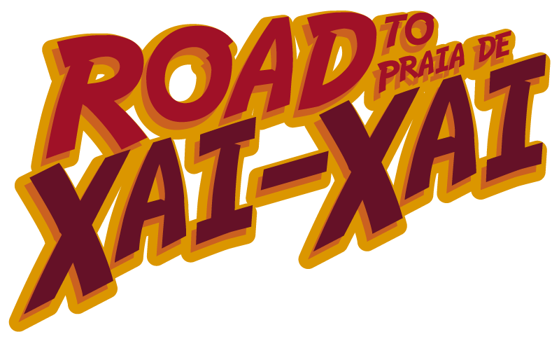

|
Si no puedes ver este email, PINCHA AQUÍ |
|
Llegando a estas fechas señaladas, queremos volver a contar contigo en nuestro proyecto solidario. Para conseguirlo, solo tienes que donar un poco de tu tiempo y jugar con nosotros. Es muy fácil, no te preocupes. A cambio, al llegar a nuestro objetivo final de 50.000 Kg. de ayuda, donaremos 3000 eu. a la Fundación Khanimambo. Esta fundación se dedica a proyectos educativos para niños y adultos, proyectos sociales y sanitarios, de nutrición y para prevenir el SIDA, en Praia XaiXai, Mozambique. La aportación solidaria que vas a hacer posible permitirá alimentar a sus 169 niños durante todo un mes. Al ayudarlos, también permitimos que nos ayuden. ¡Felices fiestas y muchas gracias por tu participación! |
|  |
|
Pincha en el logo de arriba para ir al juego. Puedes participar desde tu PC, tablet o móvil. No te olvides de dejarnos un mensaje al finalizar el juego. ¡Muchas gracias! |